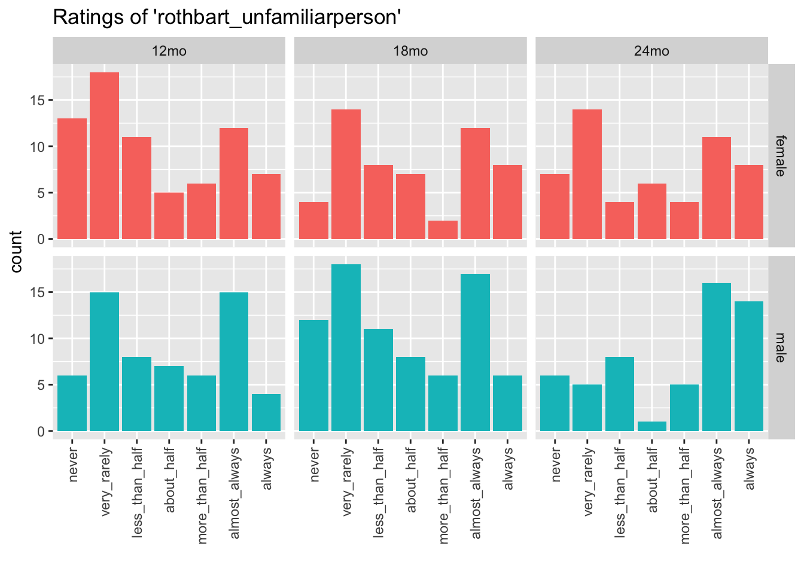
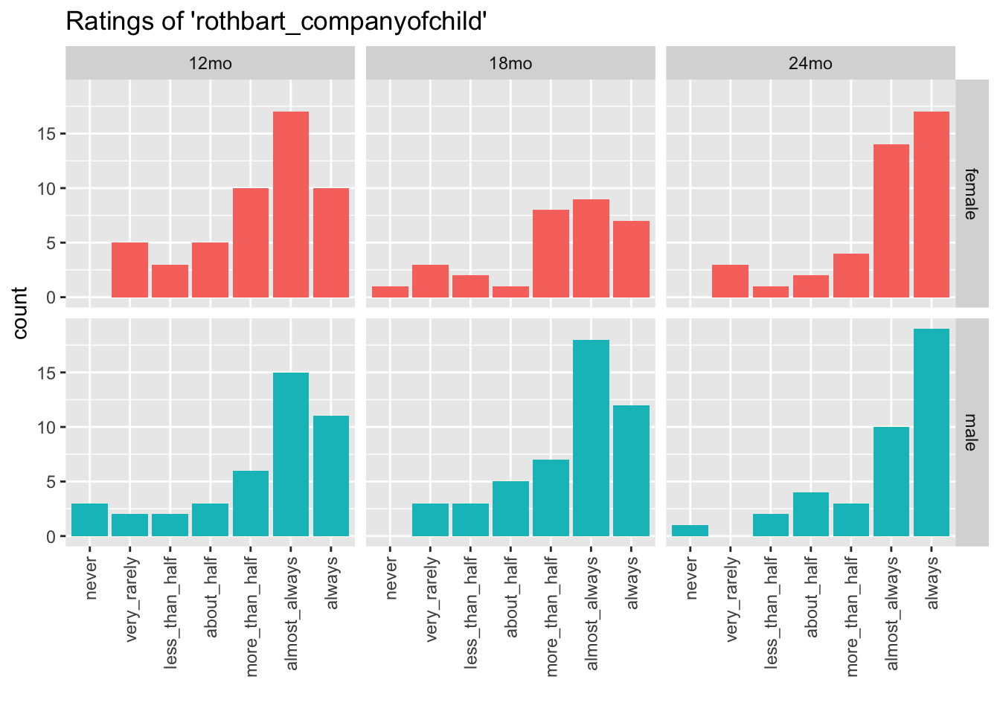
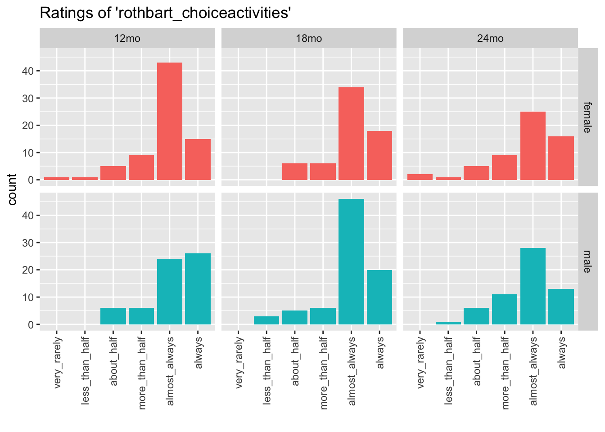
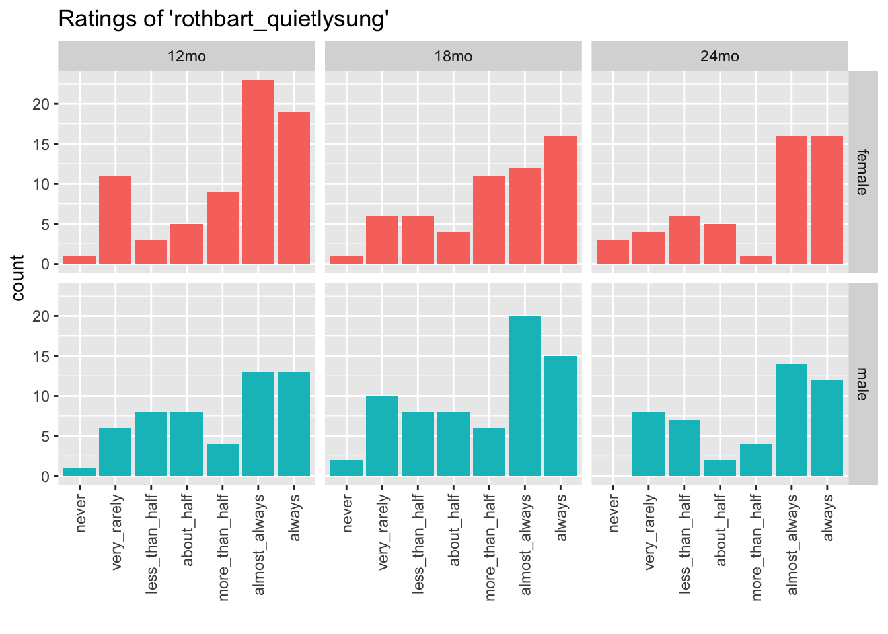

Temperament visualizations
This page provides visualizations of the Early Childhood Behavior Questionnaire (ECBQ) data related to child temperament.
Setup
As of 2023-09-21, this workflow uses a separate set of functions specifically designed to extract ECBQ data from the raw KoBoToolbox files for English-speaking families only.
The functions are found in R/ with the prefix ecbq_.
We create a “wide” data frame ecbq_wide_df as one of the targets of targets:tar_make().
We attempt to load that here and ensure that all R/ecbq_ functions are in the local environment.
Summarize
## tibble [413 × 40] (S3: tbl_df/tbl/data.frame)
## $ participant_id : chr [1:413] "PILOT" "o6Ri9H8Ka0A" "U1Ro3M7Ri" "e0N4H8O2A" ...
## $ child_sex : chr [1:413] "male" "female" "male" "female" ...
## $ age_group : chr [1:413] "18mo" "18mo" "24mo" "12mo" ...
## $ rothbart_unfamiliarperson : chr [1:413] "very_rarely" "very_rarely" "always" "very_rarely" ...
## $ rothbart_troubletask : chr [1:413] "less_than_half" "less_than_half" "less_than_half" "very_rarely" ...
## $ rothbart_companyofchild : chr [1:413] "more_than_half" NA "always" "almost_always" ...
## $ rothbart_choiceactivities : chr [1:413] "almost_always" "always" "almost_always" "almost_always" ...
## $ rothbart_quietlysung : chr [1:413] NA "almost_always" "less_than_half" "more_than_half" ...
## $ rothbart_playingoutdoors : chr [1:413] "about_half" "more_than_half" "always" "always" ...
## $ rothbart_morethan10 : chr [1:413] "less_than_half" "never" "more_than_half" "more_than_half" ...
## $ rothbart_respondingremarks : chr [1:413] "almost_always" "almost_always" "about_half" "about_half" ...
## $ rothbart_excitedlovedadults : chr [1:413] NA "very_rarely" "almost_always" NA ...
## $ rothbart_fiddlehair : chr [1:413] "about_half" "very_rarely" "very_rarely" "more_than_half" ...
## $ rothbart_roughrowdy : chr [1:413] "about_half" "very_rarely" "more_than_half" "about_half" ...
## $ rothbart_rockedhugged : chr [1:413] "never" "about_half" "less_than_half" "less_than_half" ...
## $ rothbart_involvednewactivity: chr [1:413] "almost_always" "more_than_half" "more_than_half" "almost_always" ...
## $ rothbart_tirequickly : chr [1:413] "very_rarely" "almost_always" "about_half" "less_than_half" ...
## $ rothbart_callattention : chr [1:413] "more_than_half" "more_than_half" "almost_always" "more_than_half" ...
## $ rothbart_tags : chr [1:413] "never" "never" "never" "never" ...
## $ rothbart_noisyenvironment : chr [1:413] "very_rarely" "never" NA "never" ...
## $ rothbart_energy : chr [1:413] "almost_always" "more_than_half" "almost_always" "almost_always" ...
## $ rothbart_vehicles : chr [1:413] "very_rarely" "never" "never" "very_rarely" ...
## $ rothbart_active : chr [1:413] "almost_always" "never" "less_than_half" "almost_always" ...
## $ rothbart_forbidden : chr [1:413] "more_than_half" "almost_always" "very_rarely" "almost_always" ...
## $ rothbart_sadlytearful : chr [1:413] "less_than_half" "very_rarely" "almost_always" "very_rarely" ...
## $ rothbart_downblue : chr [1:413] "never" "never" "very_rarely" "never" ...
## $ rothbart_runhouse : chr [1:413] "less_than_half" "about_half" "always" NA ...
## $ rothbart_excitingevent : chr [1:413] "less_than_half" NA "almost_always" "almost_always" ...
## $ rothbart_tempertantrum : chr [1:413] "very_rarely" "more_than_half" "about_half" "very_rarely" ...
## $ rothbart_waitpatiently : chr [1:413] "about_half" "very_rarely" "very_rarely" "almost_always" ...
## $ rothbart_rockedsmile : chr [1:413] "almost_always" NA NA "almost_always" ...
## $ rothbart_mold : chr [1:413] "almost_always" "about_half" "more_than_half" "more_than_half" ...
## $ rothbart_interactadult : chr [1:413] "always" "always" "always" "always" ...
## $ rothbart_careful : chr [1:413] NA "almost_always" "almost_always" NA ...
## $ rothbart_enternewplace : chr [1:413] "never" "never" "almost_always" "very_rarely" ...
## $ rothbart_crymorethan3 : chr [1:413] "never" "never" "less_than_half" "very_rarely" ...
## $ rothbart_easilysoothed : chr [1:413] "almost_always" "almost_always" "almost_always" "almost_always" ...
## $ rothbart_busyother : chr [1:413] "less_than_half" "about_half" "more_than_half" "almost_always" ...
## $ rothbart_differentpeople : chr [1:413] "always" "more_than_half" "almost_always" "always" ...
## $ rothbart_comments : chr [1:413] NA NA NA NA ...## child_sex
## age_group female male
## 12mo 80 65
## 18mo 64 80
## 24mo 59 65Visualize
For now, we just plot a couple of variables.
## Loading required package: ggplot2



